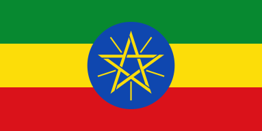

About Me
My name is Shewandagn S. Woyesa, I go by Shewandagn. I am from Addis Ababa Ethiopia and programming student with keen interest in web development. I love reading the Book of Mormon and watching funny videos. I love playing video games and watching movies, my favorite movies are mostly from the MCU, one of my favorite movie is Black Panther. I would love to learn more and improve my ability to code and become familiar with rules and functions. My goal this year is to learn HTML, CSS, JavaScript, and Python. I hope and believe with the help of the Lord you I will be able to achieve it.
Addis Ababa, Ethiopia
Ethiopia is Africa's oldest country. Originally founded in 980 BC, Ethiopia is the oldest independent nation on the continent. Additionally, Ethiopia has remnants of some of the most ancient human beings on earth dating back millions of years making it one of the most important archaeological areas in the world.